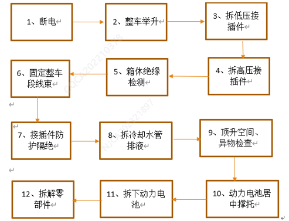
1） 拆卸准备工作 要求： 拆卸整包电池前，需将整车挪至返修位置等待维修,并整车下电，断开车辆电瓶负极线，使车辆处于断电状态。用举升机升到安全高度，将低压接插件拔出，再将高压输出接插件、快充接插件拔出(线束端和电池端接插件拔出后均需做好防护,防止异物和水渍进入；拔出的线束需就近固定,防止挂线、压线)，然后拆下冷却水管排放冷却液，注意尽量排空，避免拆卸过程中流出冷却液；拆卸时应先将电池中间两颗M8挂载点螺栓拆下，再用举升平台车顶住电池下表面， 电池在小车上左右对称（如图5.4.1.1）。 备注：高压断电后，需对箱体进行绝缘性能检测，符合要求才能进行下一步操作。工具：扭力扳手、M8套筒、接水槽
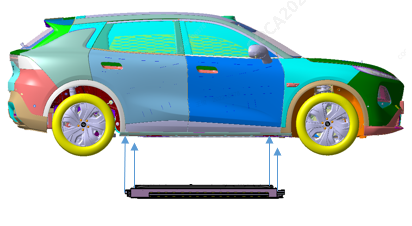
2）拆卸注意事项
1、整车下电，将车辆电瓶负极线断开，车辆处于断电状态；2、高压线束插接头拔插时需带绝缘手套；3、拆卸过程中勿造成周边零部件碰划伤。4、电池上盖与门槛安装螺栓拆卸后，人员不得进入乘员舱内，避免电池上盖踩踏变形造成电池包内部损坏。
3）拆下电池总成 要求：拆卸准备工作完成后，使用工具拆掉固定动力电池上盖上的4颗M8六角法兰面螺母和16颗M10的六角法兰面螺栓和平垫圈组合件 备注：具：预置式扭力扳手、M10套筒1）。
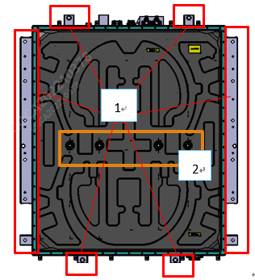
2）零部件拆卸
拆卸水嘴接头要求：拆卸4颗冷嘴接头与电池底座的连接螺栓，即可取下产品。（如图5.4.2.1）拆卸冷嘴接头。
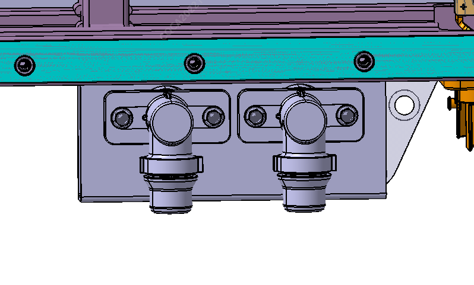
备注：螺栓一经拆卸后原则上需更换，但无损坏失效的，建议使用不超过3次2）拆防爆阀
要求：拆卸2颗防爆阀与电池底座的连接螺栓，即可取下产品。（如图5.4.2.2）拆卸防爆阀
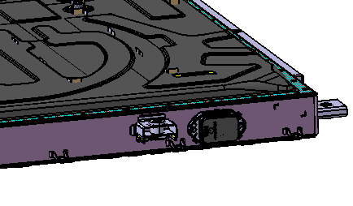
备注：螺栓一经拆卸后原则上需更换，但无损坏失效的，建议使用不超过3次1) 拆卸动力电池上盖
3）拆卸动力电池上盖
拆卸周圈64颗M5螺栓、2颗M5螺母，中部4颗M20螺母，即可取下产品（如图5.4.2.3-1
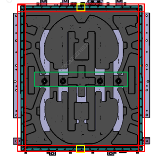
拆下后，电池内部图样（如图5.4.2.3-2）
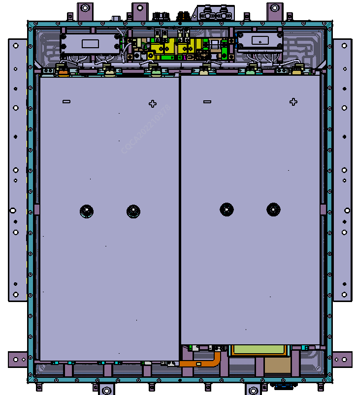
备注： 上盖板的固定螺栓一经拆卸后有损坏失效的，需进行更换。 拆除上盖后，箱体密封垫存在破损或不回弹导致气密不合格需进行更换，更换步骤详见“3.3.5.5-（2）箱体与上盖密封垫确认及更换”要求
4）拆卸铝排（模组连接Ⅲ）
高压危险，注意安全！ 铝排（模块连接Ⅱ）-2101352-FQ11为拆卸时的安全铝排，优先拆卸该铝排，安装时应优先安装此铝排！
要求：拆卸4颗铝排与模组连接螺栓，即可取下产品。（如图5.4.2.4）
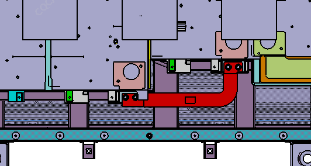
备注： 与模组相连的螺栓一经拆卸后原则上需更换，但无损坏失效的，建议使用不超过3次。
5）拆卸铝排（模组连接Ⅰ）
要求：拆卸2颗铝排与模组输出极接螺栓，1颗铝排与高压电器盒连接的螺栓即可取下产品。（如图5.4.2.5）
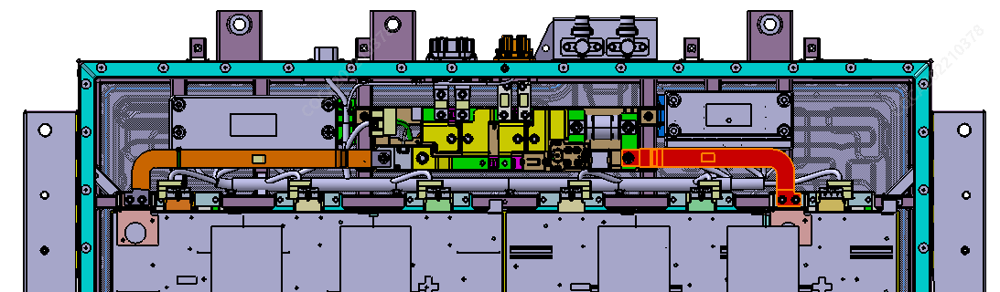
备注：螺栓一经拆卸后原则上需更换，但无损坏失效的，建议使用不超过3次。5
6）拆卸铝排（模组连接Ⅱ
要求：拆卸2颗铝排与模组输出极接螺栓，1颗铝排与高压电器盒连接的螺栓，将铝排自带卡口从箱体支架上取下后即可取下产品。。（如图5.4.2.6）
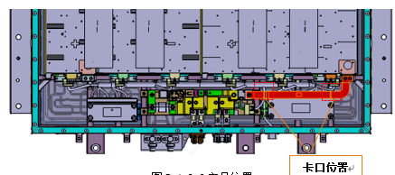
备注：螺栓一经拆卸后原则上需更换，但无损坏失效的，建议使用不超过3次。
7）拆卸BMS安装螺栓
要求：分别拆卸8颗BMS支架安装螺栓（如图5.4.2.7），即可取下产品，方便下一步的线束拆解
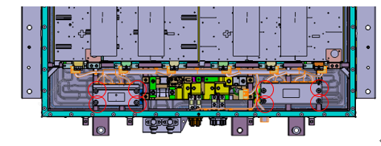
备注：螺栓一经拆卸后原则上需更换，但无损坏失效的，建议使用不超过3次
8）拔除FPC、高压电气盒与主分板插接线束
要求：先拔下高压电气盒与整包低压线束对插头，再拔掉BMS主板线束（J6→J5→J4→J3→J2→J1），再拔掉BMS分板接插线束（J4→J3→J2→J1），最后拔掉FPC端线束。如下图所示
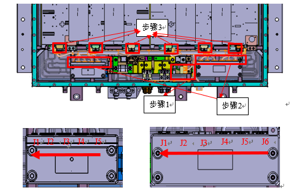
9） （输出正&负）和铝排（快充转接Ⅱ）
要求： 分别拆卸8颗铝排与接插件、铝排与高压电气盒的连接螺栓，即可取下产品。（如图5.4.2.10）
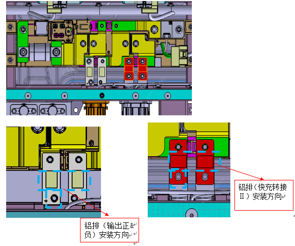
备注：螺栓一经拆卸后原则上需更换，但无损坏失效的，建议使用不超过3次。
10）拆卸电池高压电气盒
要求：拆卸4颗电池高压电器盒底座安装螺栓（如图5.4.2.11），即可取下产品
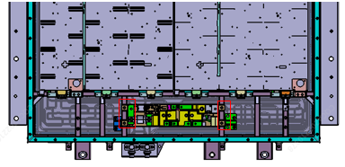
备注：螺栓一经拆卸后原则上需更换，但无损坏失效的，建议使用不超过3次。
11）拆卸信号采集线束总成
要求：按照“拆卸电池管理系统、BDU”的要求进行操作后，先拆除低压通讯接插件的4颗螺栓，再拔出高压接插件处的互锁线束后，最后用卡扣起子翘板在线束支架上取出线束扎带，即可得到产品（如图5.4.2.13）。
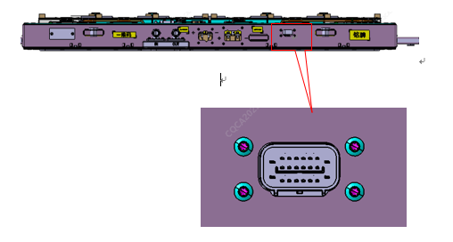
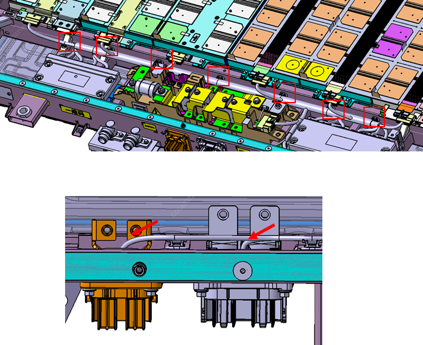
要求：线束卡扣一经取出，再安装时需对已损坏的进行更换
12）拆卸高压接插件总成
要求：拆卸8颗安装螺栓，即可得到产品（如图5.4.2.14）
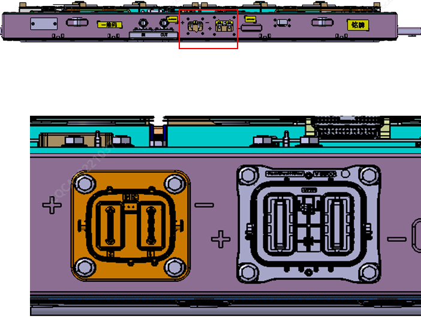
备注：螺栓一经拆卸后原则上需更换，但无损坏失效的，建议使用不超过3次。
13）接插件及低压线束示意图
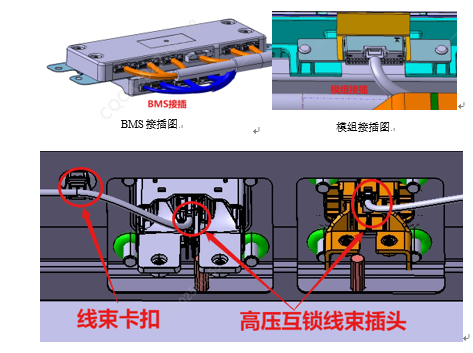
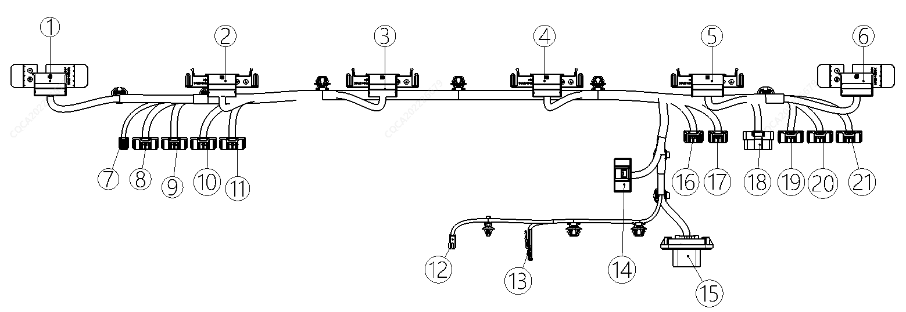
|
1 |
接模组6 |
|
2 |
接模组5 |
|
3 |
接模组4 |
|
4 |
接模组3 |
|
5 |
接模组2 |
|
6 |
接模组1 |
|
7 |
接CMU-J1 |
|
8 |
接CMU-J2 |
|
9 |
接CMU-J3 |
|
10 |
接CMU-J4 |
|
11 |
接CMU-J5 |
|
12 |
接高压输出接插件互锁 |
|
13 |
接快充接插件互锁 |
|
14 |
接一体式BDU |
|
15 |
接整车低压线束 |
|
16 |
接BMS-J1 |
|
17 |
接BMS-J2 |
|
18 |
接BMS-J3 |
|
19 |
接BMS-J4 |
|
20 |
接BMS-J5 |
|
21 |
接BMS-J6 |
备注：螺栓、螺母一经拆卸后有损坏失效的，需进行更换。
14）吸湿片拆卸及安装
要求：完成电池包维修及测试后，在合装检修盖板前，对包内吸湿片进行更换。更换要求为：吸湿片拆封粘贴后2h内完成电池检修盖板合装。更换位置见图5.4.2.16
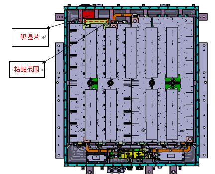
备注： 螺栓一经拆卸后有损坏失效的，需进行更换
按“拆卸流程”逆序操作。
1）补加冷却液整包拆卸后，车辆重新加注防冻液，进行排气，保证液面高度在MAX~MIN线之间，要求参考整车《低温系统加注冷却液》。
2）电池总成每次拆盖检修后，在合盖前必须检查确认箱体整圈密封垫外观是否完好无破损，若存在破损需进行更换，具体步骤如下：1）采用直接手撕或者聚四氟乙烯铲刀铲除的方式将原有密封垫去除，要求箱体密封面上无明显密封垫残留物；2）将新的密封垫展开后按正确的方向和位置平铺到箱体密封面上（背胶面朝下）；3）按先四角后其他的顺序依次撕掉密封垫背胶纸并压贴到箱体上。注意：密封垫不能遮盖电池箱体上拉铆螺母盘头面。4）吸湿片更换：电池总成每次拆盖检修后，合盖前需要重新粘贴全新吸湿片，安装过程允许重复粘贴次数≤1次，且2h内完成封盖。
3）检测： 1、车辆需做综合电检，整车绝缘、直流安规、电喷 2、、路试：异响检查、防冻液液面检查。 3、拆卸动力电池底座维修后回装，需重新进行整包气密测试.4、整包拆卸后，车辆重新加注防冻液，进行排气，保证液面高度在MAX~MIN线之间，要求参考整车《低温系统加注冷却液》。